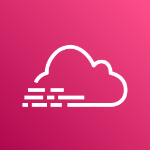
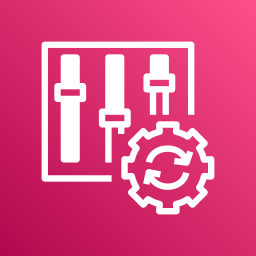
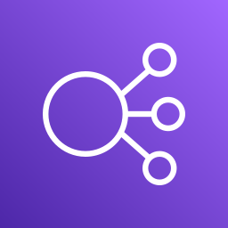

Escreve para quem corrige, decide e contrata
A técnica para quem corrige, a simplificada para quem decide e o relatório para quem contrata.
Cole o Terraform e receba uma nota de 0 a 100, os riscos em ordem e um relatório que o seu cliente entende.
18 ingress {
19 from_port = 22
20 protocol = "tcp"
21 cidr_blocks = ["0.0.0.0/0"]
22 }
23
24resource "aws_db_instance" "main" {
25 publicly_accessible = true
Precisa de atenção
12 pontos de melhoria, 8 com prioridade
A lista traz os riscos por severidade. Abra um e veja o trecho do Terraform, o motivo e a correção pronta para copiar.
var.admin_cidr, a rede da equipe.A técnica para quem corrige, a simplificada para quem decide e o relatório para quem contrata.
Os riscos altos vêm antes, com a correção de cada regra e o arquivo onde ela entra.
A nota sai de regras escritas, não de um modelo de IA. Rode a análise de novo amanhã e o resultado será igual, linha por linha.
Pergunte em português simples. A resposta usa só esta análise, sem inventar dados.
Cada conta tem o histórico das análises. Compare a nota de hoje com a da semana passada.
Cole o código no editor ou solte um arquivo. Um diagrama em PNG, JPG ou PDF passa pelo Amazon Textract e vira texto para a análise.
.tf e .json vão direto para o editor.
Imagem e PDF passam pelo Amazon Textract.
Login com a sua conta, e cada análise fica no histórico.

Registro com CloudTrail10 pontos
Mudanças com AWS Config10 pontos
Balanceadores com HTTPS5 pontos100
pontos no total, divididos entre as oito categorias
22
verificações de segurança e custo em cada análise
3
respostas escritas a partir do mesmo resultado
Cada problema vira três respostas simples: o que significa, o que pode acontecer com o negócio e o que fazer agora.
Sem siglas e sem nomes de recursos. Copie o texto para um e-mail ou salve em PDF para enviar.
Precisa de atenção
O ambiente recebeu nota 0 de 100. Encontramos 12 pontos de melhoria, e 8 deles merecem prioridade.
Resolver primeiro
O banco de dados pode ser alcançado pela internet
Pronto para copiar em um e-mail ou salvar em PDF
Cole o Terraform, solte um arquivo .tf ou envie a imagem de um diagrama.
Pronto para enviar a quem não é da área.
ArchIQ · Terraform + Amazon Bedrock · AWS Well-Architected